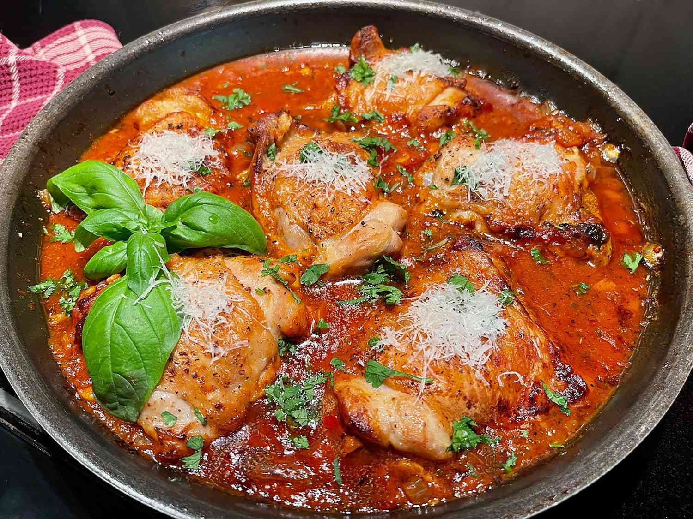

Chicken Fra Recipe

Recipe Description
This chicken fra diavolo is chicken thighs in my version of fra diavolo
sauce, the spicy Italian pepper and tomato sauce with fresh herbs and
white wine, usually used with seafood. We like spicy, and I wondered, “why
not chicken?” We liked it with crusty bread, to get every last drop of the
sauce.
Ingredients
- 6 skin-on, bone-in chicken thighs
- 1 tablespoon olive oil
- 1 small onion, chopped
- 2 teaspoons Italian seasoning
- 1/2 cup white wine, such as Pinot Grigio
Steps
- Preheat the oven to 375 degrees F (190 degrees C).
-
Pat chicken thighs dry with paper towels, and trim away extra skin and
excess fat. Season each chicken thigh with salt and pepper on both
sides.
-
In a large, oven-safe skillet, heat olive oil and butter over medium
heat.